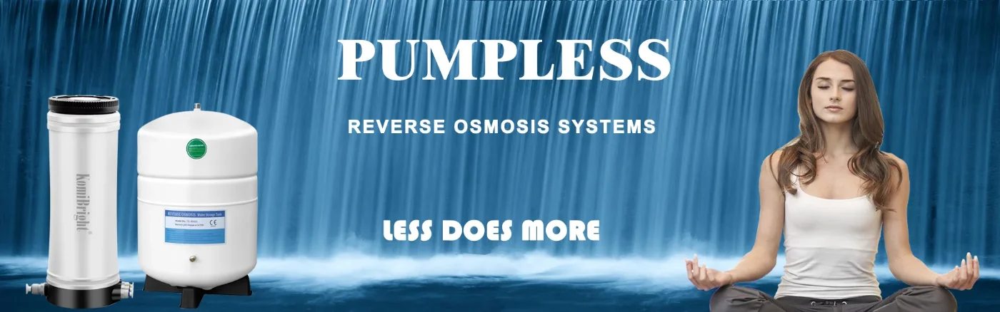
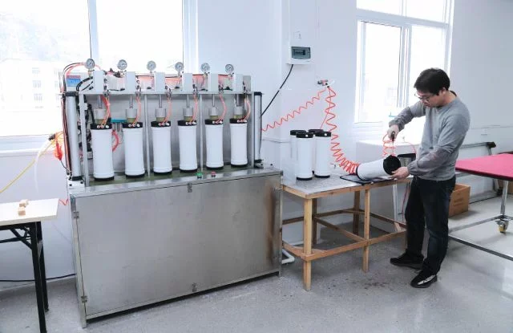

Pumpless reverse osmosis · Since 2009
Pure water. No pump.
Pure water. No pump.
No electricity.
KomiBright builds patented reverse osmosis and ultrafiltration systems that run on tap pressure alone — 0.0001 μm purified water, with one filter change a year.
2009Established
30Countries served
0.0001μmRO filtration
1×Filter change / year

0 Welectricity used
1.5 baris all it needs
1×/yrfilter change
Product ranges


Five ranges, one philosophy: keep it simple
From under-sink RO to whole-house stainless steel UF — every KomiBright system is designed to install easily, run without power, and maintain itself with one yearly filter change.
Why KomiBright
Less does more
Zero electricity
Runs on municipal tap pressure from 1.5 bar. No pump to fail, no socket needed, no noise.
One filter a year
A super compound filter replaces the usual 3–5 cartridges. Swap it — and the membrane — once a year.
DIY installation
Modularised waterways and no redundant fittings: install and maintain it yourself, no technician.
Patented & controlled
Original designs and patents, with IQC / PQC / OQC control from raw material to export.
Featured products

The systems our partners reorder
RO Systems
KB-C25R 100G Electricity-Free Reverse Osmosis System
The flagship pumpless RO system — 0.0001 μm pure water from tap pressure alone, one filter change a year.
View productRO Systems
KB-C25RH Desktop Smart Jar RO Water Purifier
Countertop RO purification paired with a smart jar — no installation under the sink required.
View productDirect Flow RO
KB-C100R Tankless & Pumpless Direct Flow RO System
1000G direct-flow RO in a 304 stainless steel housing — two outlets, no tank, no pump.
View productOutdoor Purifiers
KB-A95R 100G Outdoor RO Water Purifier
Portable reverse osmosis for camping and RV life — purifies tap, river and lake water without power.
View productStainless Steel UF
Stainless Steel UF System — Washable PVDF Membrane
Whole-house and commercial ultrafiltration in 304 stainless steel — washable membrane, zero waste water, up to 20,000 L/H.
View product
Technology
Reverse osmosis, minus the pump
RO needs pressure, not power. Self-stabilising valves, an integrated flow restrictor and a low-resistance waterway let ordinary tap pressure push water through a 0.0001 μm membrane — and even flush the membrane automatically.
- Auto membrane flushing without power
- One housing, multi-membrane function
- Food-grade PP5 materials throughout


About us
A factory obsessed with simplicity since 2009
RO makes the cleanest water, but traditional machines are hard to install, rely on failure-prone pumps and juggle multiple filters. KomiBright was founded to fix exactly that — following the KISS principle: Keep It Simple, Stupid. Today our products serve users in nearly 30 countries.
FAQ
Questions, answered
How can a reverse osmosis system work without electricity?
Reverse osmosis only needs pressure, not electricity. Conventional RO machines add an electric booster pump; KomiBright systems are engineered with innovative self-stabilising valves, an integrated flow restrictor and a low-resistance waterway so that normal municipal tap pressure (from 1.5 bar) is enough to push water through the 0.0001 μm membrane.
What water pressure do I need?
C25R-series systems run on 21–70 PSI (1.5–5 bar). The KB-C100R direct-flow system needs 30–70 PSI (2–5 bar); with 3 bars of tap pressure it needs no pump kit at all. If your pressure is lower, a pump kit can be added.
How often do filters need replacing, and can I do it myself?
Once a year — that's the whole maintenance schedule. One compound filter and one membrane, both designed for tool-free replacement in minutes. No technician visit needed.
Ready to talk water?
Distributor pricing, OEM projects or a single sample — our team replies fast on WhatsApp and email.